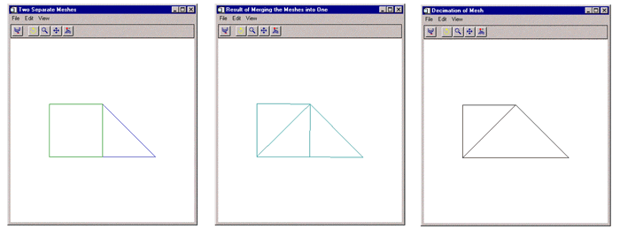

The MESH_MERGE function merges two polygonal meshes.
Result = MESH_MERGE (Verts, Conn, Verts1, Conn1 [, /COMBINE_VERTICES] [, TOLERANCE=value] )
The function return value is the number of triangles in the modified polygonal mesh connectivity array.
Input/Output array of polygonal vertices [3, n]. These are potentially modified and returned to the user.
Input/Output polygonal mesh connectivity array. This array is modified and returned to the user.
Additional input polygonal vertex array [3, n].
Additional input polygonal mesh connectivity array.
If this keyword is set, the routine will attempt to collapse vertices which are at the same location in space into single vertices. If the expression
is true, the points (i) and (i+1) can be collapsed into a single vertex. The result is returned as a modification of the Verts argument.
This keyword is used to specify the tolerance value used with the COMBINE_VERTICES keyword. The default value is 0.0.
This example merges two simple meshes: a single square and a single right triangle. The right side of the square is in the same location as the left side of the triangle. Each mesh is originally its own polygon object. These objects are then added to a model object. The model is displayed in the XOBJVIEW utility. The XOBJVEW utility allows you to click-and-drag the polygon object to rotate and translate it. See XOBJVIEW for more information on this utility.
When you quit out of the first XOBJVIEW display, the second XOBJVIEW display will appear. The meshes are merged into a single polygon object. After you quit out of the second display, the final display shows the results of decimating the merged mesh to obtain the least number connections for these vertices. Decimation can often be used to refine the results of merging.
This example is split into several parts; click on each section to enter the code at the IDL command line.
; Create a mesh of a single square (4 vertices
; connected counter-clockwise from the lower left
; corner of the mesh.
vertices = [[-2., -1., 0.], [0., -1., 0.], $
[0., 1., 0.], [-2., 1., 0.]]
connectivity = [4, 0, 1, 2, 3]
; Create a separate mesh of a single triangle (3
; vertices connected counter-clockwise from the lower
; left corner of the mesh.
triangleVertices = [[0., -1., 0.], [2., -1., 0.], $
[0., 1., 0.]]
triangleConnectivity = [3, 0, 1, 2]
; Initialize model for display.
oModel = OBJ_NEW('IDLgrModel')
; Initialize polygon for the square mesh.
oPolygon = OBJ_NEW('IDLgrPolygon', vertices, $
POLYGONS = connectivity, COLOR = [0, 128, 0], $
STYLE = 1)
; Initialize polygon for the triangle mesh.
oTrianglePolygon = OBJ_NEW('IDLgrPolygon', $
triangleVertices, POLYGONS = triangleConnectivity, $
COLOR = [0, 0, 255], STYLE = 1)
; Add both polygons to the model.
oModel->Add, oPolygon
oModel->Add, oTrianglePolygon
; Display the model in the XOBJVIEW utility.
XOBJVIEW, oModel, /BLOCK, $
TITLE = 'Two Separate Meshes'
; Merge the square and triangle into a single mesh.
numberTriangles = MESH_MERGE(vertices, $
connectivity, triangleVertices, $
triangleConnectivity, /COMBINE_VERTICES)
; Output number of resulting vertices and triangles.
numberVertices = SIZE(vertices, /DIMENSIONS)
PRINT, 'numberVertices = ', numberVertices[1]
PRINT, 'numberTriangles = ', numberTriangles
; Cleanup triangle polygon object, which is no longer
; needed.
OBJ_DESTROY, [oTrianglePolygon]
; Update remaining polygon object with the results from
; merging the two meshes together.
oPolygon->SetProperty, DATA = vertices, $
POLYGONS = connectivity, COLOR = [0, 128, 128]
; Display results.
XOBJVIEW, oModel, /BLOCK, $
TITLE = 'Result of Merging the Meshes into One'
; Decimate polygon to 75 percent of the original
; number of vertices.
numberTriangles = MESH_DECIMATE(vertices, connectivity, $
decimatedConnectivity, PERCENT_POLYGONS = 75)
; Output number of resulting triangles.
PRINT, 'After Decimation: numberTriangles = ', numberTriangles
; Update polygon with results from decimating.
oPolygon->SetProperty, DATA = vertices, $
POLYGONS = decimatedConnectivity, COLOR = [0, 0, 0]
; Display decimation results.
XOBJVIEW, oModel, /BLOCK, $
TITLE = 'Decimation of Mesh'
; Cleanup object references.
OBJ_DESTROY, [oModel]
The results for this example are shown in the following figure: original, separate meshes (left), merged mesh (center) and decimated mesh (right).
|
 |
|
5.5 |
Introduced |
MESH_CLIP , MESH_DECIMATE , MESH_ISSOLID , MESH_NUMTRIANGLES , MESH_OBJ , MESH_SMOOTH , MESH_SURFACEAREA , MESH_VALIDATE , MESH_VOLUME